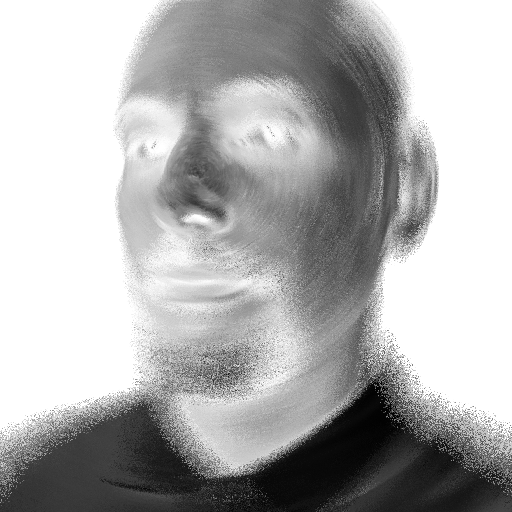

Diseñador gráfico con estudios en Publicidad y Artes Visuales, cuenta con experiencia en diseño editorial, diseño web e identidad de marca. Su trayectoria como diseñador está trazada por la participación en proyectos de comunicación visual para entornos digitales e impresos, con equipos empresariales y organizaciones en el campo de medios de comunicación, organización social, tecnología digital y cultura. Integra distintos equipos laborales aportando desde el diseño gráfico y la comunicación visual ante las necesidades que emergen en sus procesos comunicativos.
Como artista, muestra interés por la ambigüedad de la percepción de la realidad, la identidad cultural y los espacios entre líneas dentro de la cultura y la sociedad contemporánea. Construye su obra desde múltiples técnicas y recursos, encontrando las vías materiales para comunicar conceptos estéticos maleables. Su práctica artística explora la imagen y el lenguaje, desarrollando su propósito mediante el uso de técnicas analógicas o digitales, con todo tipo de recursos que contribuyan en la articulación del concepto y la forma.
Portafolio gráfico.
Laboratorio de artes visuales.